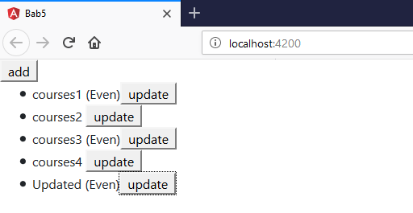

Bab 5 Directive
ngIf
Directive ngIf digunakan untuk sebuah kondisi percabangan
buka file app.component.ts
- buka file app.component.html
- Jalankan localhost hasil seperti berikut

contoh kedua menggunakan else:
- buka file app.component.html modifikasi kodenya
- Jalankan localhost dengan konndisi array pada app.component
- dengan array kosong
- hasilnya :
- dengan array ada isi
- hasilnya :
cara ketiga :
- buka file app.component.html modifikasi kodenya

- jalankan localhost dengan kondisi array pada app.component
- dengan array kosng
- hasilnya :
- dengan array ada isi

- hasilnya :

Hidden Property
- buka app.component.html

- jalankan localhost hasilnya :

- selain contoh diatas kita juga dapat memberikan property

dengan catattan pada app.component.ts pada courses terdapat array courses dengan nilai 1 dan 2

- hasilnya :
- kita inspect element akan terlihat property hidden tidak terdapat kondisi true ataupun false

- berbeda jika menggunakan ngIF terdapat bindings dengan nilai false

ngSwitchCase
- buka file app.component.html modifikasi codenya

- buka file app.component.ts tambahkan property viewMode

- hasilnya :

ngFor
- buka app.component.ts property CoursesFor yang berisikan array

- buka file app.component.html tambahkan directive ngFor pada element li
- hasilnya :
- kita juga dapat memberi tanda tertentu pada index yang bernilai ganjil dengan menggunakan isEven

- hasilnya :

ngFor dang change Detection
- Pada percobaan ini kita akan menambahkan sebuah data array pada coursesFor
- tambahkan button pada app.component.html

- tambahkan method onAdd()
- sehingga hasilnya seperti berikut (jika kita tekan button add maka akan ditambahkan sebuah data courses 6)

- setelah kita berhasil menambahkan sebuah data array pada courseFor maka untuk selanjutnya kita akan mencoba untuk melakukan penghapusan data.
- Tambahkan sebuah method onRemove pada app.component.ts

- inspect element pada saat klick button remove

- Buka app.component.html dan tambahkan sebuah button untuk menghapus

- hasilnya seperti berikut (pada saat button remove diclick maka salah satu data akan hilang sementara)

- selain itu kita juga dapat melakukan perubahan status menggunakan event click
- buka file app.component.html tambahkan button

- buka file app.component.ts buatlah sebuah method onChange dengan parameter item dan didalam method tersebut adanya perubahan string menjadi updated
- hasilnya :


ngFor dan trackby
- Buka file app.component.ts buatlah sebuah method dengan nama loadCourses, tapi sebelumnya buat sebuah property dengan nama coursesForOne
- buka file app.component.html dan tambahkan code

- hasilnya saat button diclick


- sekarang kita lakukan analisa buka inspect element, saat button belum diclick
- dan saat button diklik maka element ul akan muncul
- jika kita lakukan klik kembali maka button akan merespon kembali dengan menampilkan data yang sudah ada dalam arti mengunduh ulang yang sudah ada
oleh karena itu kita membutuhkan TrackBy yang nanti digunakan untuk mengecek jika data sudah ada maka button tidak perlu melakukan actionnya kembali
untuk menambahkan TrackBy dengan cara menambahkan pada app.component.html pada directive ngFor
- selain itu tambahkan juga sebuah method trackCourse dengan parameter index dan itemone pada app.component.ts
- jika berhasil maka pada saat button tampilkan data diklik untuk kedua kalinya pada inspect element tidak ada muncul highlight ungu pada masing-masing element li
The leading Asterik
- kita memberi tahu angular untuk menulis ulang markup tertentu

- menggunakan ng template dengan menggunakan property binding
- class binding fa-star dan fa-star-o

- selain menggunakan class binding seperti diatas kita juga dapat menggunakan attribute directive
Custom Directive
- pertama kita harus membuat directive dengan nama input-format terlebih

- jika directive berhasil digenerate maka kita pastikan di app.module.ts pada @NgModule terdapat nama directive yang kita buat tadi

- buka input-format.directive.ts dan tambahkan decorator HostListener

- Buka file app.component.html dan tambahakn code
terdapat appInputFormat adalah selector pada inputformat.directive.ts
- Kita jalan localhost:4200 setelah itu lakukan percobaan click pada textbox dan click diluar textbox

- buka file input-format.directive.ts dan modifikasi codenya

- Jalankan localhost dan berikan masukan dengan huruf besar semua setelah itu tekan tab


- buka file app.component.html dan tambahkan property binding dengan nama format
- buka file input-format.directive.ts tambahkan decorator input dan modifikasi codenya
- buka app.component.html
atau kita juga dapat menggunakan cara lain yaitu menggunakan nama selector sebagai property binding
buka app.component.hml modifikasi codenya

buka input-format.directive.ts dan tambahkan decorator input dengan parameter appInputFormat
Jika dijalankan sebagai contoh kita memasukkan kalimat dengan huruf kecil dan pada saat kita tab maka akan berubah menjadi huruf besar semua seperti berikut